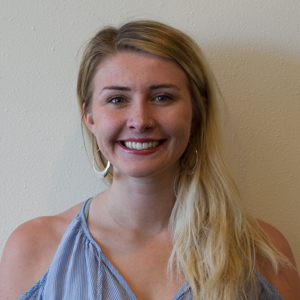
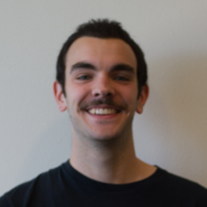
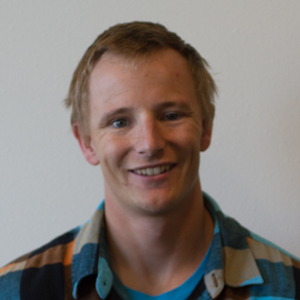
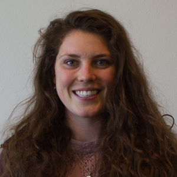
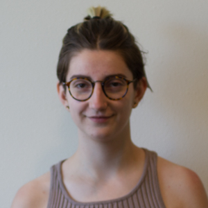
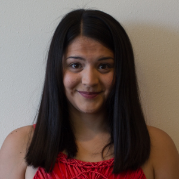
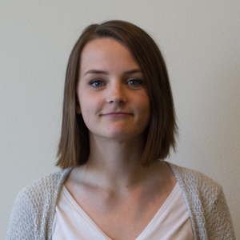
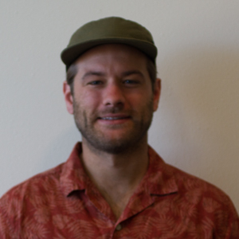
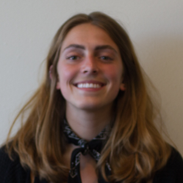
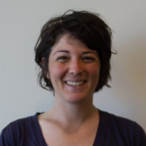

Meet the Meth Effect team
Visual Team
 Kayla Robertson
Kayla Robertson
Designer, Digital Producer
Kayla is a recent graduate from the University of Montana with a degree in journalism and a focus on all things design and data. She loves to tell stories on all platforms
through print design, web design and infographics, having worked as design editor for the Montana Kaimin and manager of the Innovation Studio at UM.
| Portfolio

Kelsey Johnson
Designer, Digital Producer
Kelsey is majoring in journalism and media arts, with a focus on print and digital design. She is the graphics editor for the Montana Kaimin and will be working as a designer at the Flathead Beacon for the summer of 2017. Likes: fancy pens, mexican food and podcasts. Dislikes: keeping track of her keys and writing short bios. See her work here.

Ian Baldessari
Photographer, Instagram Editor
Ian Baldessari is a photographer from Bend, Oregon. He attends the University of Montana where he is working to get his undergraduate degree in journalism. Ian is an avid outdoorsman and spends his free time exploring the mountains throughout Montana.
Josh Geiger
Photographer
Josh, a 2017 graduate of the University of Montana journalism school, is often referred to as an old soul. Coming to the great state of Montana via Spokane, Wash., he is incredibly appreciative for what the Treasure State has shown him. For Josh, photography is the best way to hold a memory.

Corey Hockett
Photographer
Corey Hockett is most commonly referred to as an adventure photographer… or a writer, or skier, climber, hunter, biker, or runner. Whatever he may be, you can find him moving outside with a pen and camera in hand. He is graduating from the University of Montana School of Journalism with a minor in Ecological Restoration.

Claire Chandler
Data, Facebook Editor
Tall with a cartoon voice, Claire Chandler was born and raised in Bozeman, Montana. A big fan of ice cream and skiing, she hopes to work where stories and technology collide after graduating from the University of Montana with degrees in Journalism and Information Systems.

Cal Reynolds
Photographer
Cal Reynolds is a junior journalism student at the University of Montana. Cal focuses primarily on photography and online reporting.

Tailyr Irvine
Photographer
Tailyr Irvine is a senior at the University of Montana where she studies photojournalism.

Callahan Peel
Writer, Social Media Editor
Callahan Peel is a sophomore at the University of Montana focused on honing her writing skills. When she's not participating in senior capstone courses, she can usually be found taking a nap or listening to a good podcast.
Writers, Editors and Audio Producers

Rick Rowan
Audio Producer
Rick Rowan grew up outside New York City. Graduating in spring 2017, Rick is interested in reporting on state house policy making and the people it impacts.
Aunica McCullough
Audio Producer
Aunica McCullough is a junior at the University of Montana School of Journalism. She someday hopes to be a sideline reporter for the National Football League.
Maria Anderson
Audio Producer, Reporter
Maria Anderson is a Seattle suburb transplant who studies journalism and Spanish. She's passionate about the Seattle Mariners, the color orange and sunshine.
Meghan Bourassa
Audio Producer, Reporter
Meghan is currently studying radio-tv production at the University of Montana. She loves anything outdoor related and will go on any kind of adventure.
 Beau Baker
Beau Baker
Audio Producer, Reporter
Beau Baker works for Montana Public Radio as a host and news reporter. He's honing his chops in the Environmental Science and Natural Resource Journalism program at the University of Montana with a focus on water issues. His work for the Meth Effect was his first foray into the justice system.
Matt Blois
Audio Producer, Reporter
A biologist by training, Matt chased jaguars in Mexico and condors in California before pursuing a master’s degree in journalism at the University of Montana. Easily distracted by colorful birds.

Kasey Bubnash
Writer, Editor
Kasey Bubnash is a reporter at the Montana Kaimin, the Missoulian and a journalism student at the University of Montana. She will graduate May 2017.
Bowen West
Writer, Editor
Bowen West is a recent graduate of the University of Montana. Where he studied print journalism. He is just like everybody else. Only with piercing eyes and a sense of what's right and wrong.
Anna Reid
Writer, Editor
Anna Reid was born and raised in Yellowstone National Park. A 2017 graduate of the University of Montana journalism school, she worked for the Montana Kaimin, participated in the Global Leadership Initiative and was a member of the Davidson Honors College during her time in Missoula.
Augusta McDonell
Writer, Editor
Augusta McDonnell is a multimedia journalist, who reports on issues close to the heart of Montana.

Nora Saks
Audio Producer, Reporter
Nora is a freelance radio and print journalist. Having lived both north and south of the 49th parallel, she’s inclined to use the term “bioregion” a little too frequently when describing her interest in exploring boundaries based on ecology rather than politics. She’s finally made it to the other side of her first Saturn Return, thank goodness.
 Taylor Crews
Taylor Crews
Taylor Crews is a Montana native and will be a senior at the University of Montana in the fall. She loves exploring, learning and telling stories.
Faculty Advisers
Jule Banville
Jule Banville is an associate professor at the University of Montana School of Journalism. She taught those students who filed audio reports for the Meth Effect. She also produces the podcast, Last Best Stories.
Lee Banville
Lee Banville is an associate professor of journalism focusing on digital news and political reporting. He focused on teaching students how to conceive and launch the website as well as develop audiences
on social media.